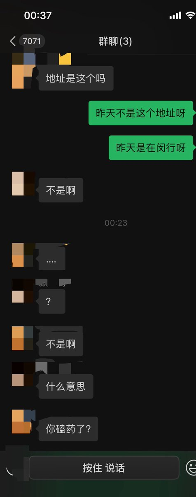
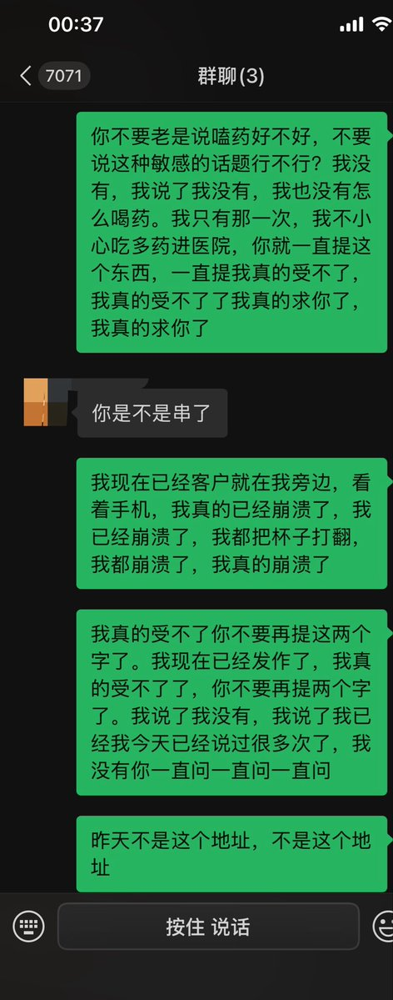
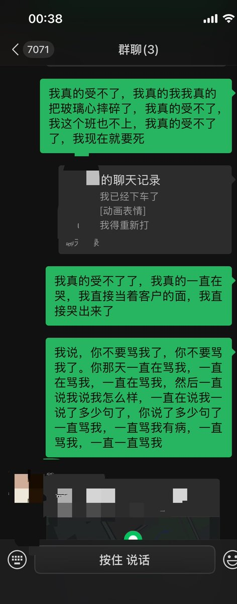

洛（烟代版）
@wndsfefoumxlw6
@Mintink3 离这种傻逼远点吧



Beatrice
@Mintink3
大家真的不要让身边健全人知道你在嗑药 不然有的贱人就会一直提 甚至不分场合地在别人面前说我嗑药
我今天帮他发单 他自己发错地址 然后在有其他朋友的群里说我嗑药是我发错的
我说了我没有嗑药 说了我没发错 还跟别人说是我发错了一直骂我 骂了我一天了我本来陪客户就受尽委屈我还受他气 https://t.co/3zj05BSBTA